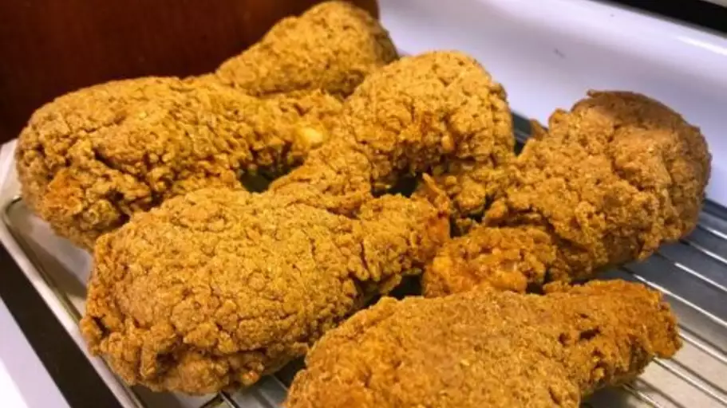

Fried Chicken

This is the only crispy fried chicken recipe you'll ever need. Why? It combines all the tried-and-true tricks to ensure the juiciest, most flavorful, crispiest chicken every time.
Description
Fried chicken, also known as Southern fried chicken, is a dish consisting of chicken pieces that have been coated with seasoned flour or batter and pan-fried, deep fried, pressure fried, or air fried. The breading adds a crisp coating or crust to the exterior of the chicken while retaining juices in the meat.
Ingredients
- Chicken
- Butter Milk
- Flour
- Seasonings
- Oil
Steps
- Make the Breading
- Dredge the Chicken
- Fry the Chicken